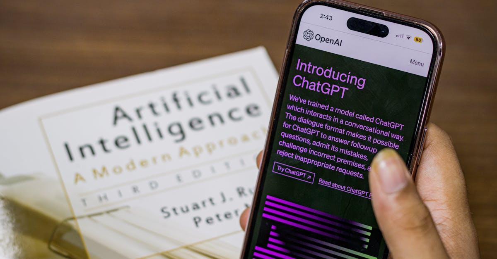

Quand Washington dit tout et son contraire : Anthropic Mythos au cœur d'un paradoxe politique
Le 12 avril 2026, TechCrunch révélait une information explosive : des conseillers économiques de l'administration Trump auraient activement encouragé les plus grandes banques américaines à tester Mythos, le tout dernier modèle de fondation développé par Anthropic. Une recommandation qui, prise isolément, pourrait sembler logique dans un contexte de compétition technologique féroce entre les États-Unis et la Chine. Sauf que, quelques semaines plus tôt, le Département de la Défense (DoD) avait classé Anthropic parmi les entreprises représentant un risque pour la chaîne d'approvisionnement nationale.
Cette contradiction flagrante met en lumière les fractures profondes qui traversent la politique américaine en matière d'intelligence artificielle. D'un côté, les faucons de la sécurité nationale ; de l'autre, les promoteurs de la compétitivité économique. Et au milieu, les banques — piliers du système financier mondial — sommées de naviguer dans des eaux de plus en plus troubles.
Pour les investisseurs en cryptomonnaies et en technologies de pointe, cette situation est riche d'enseignements. Elle illustre comment l'IA de fondation est devenue un enjeu géopolitique de premier plan, et pourquoi la convergence entre finance et intelligence artificielle représente l'un des marchés les plus prometteurs — et les plus risqués — de la décennie.
Mythos : le modèle qui fait saliver Wall Street
Qu'est-ce que Mythos exactement ?
Mythos est le dernier modèle de fondation d'Anthropic, successeur de la famille Claude. Dévoilé début 2026, il représente un saut qualitatif considérable dans plusieurs domaines clés pour le secteur financier :
- Raisonnement multi-étapes avancé : Mythos peut enchaîner des inférences logiques complexes sur de longues séquences, ce qui le rend particulièrement adapté à l'analyse de risque et à la modélisation financière.
- Fenêtre de contexte massive : avec une capacité de traitement de plusieurs millions de tokens, le modèle peut ingérer et analyser des rapports financiers complets, des historiques de transactions étendus et des corpus réglementaires entiers en une seule passe.
- Sécurité constitutionnelle renforcée : Anthropic a intégré dans Mythos sa méthodologie propriétaire d'IA constitutionnelle, censée garantir des réponses alignées avec des principes éthiques prédéfinis — un argument de vente majeur pour les institutions financières soumises à des obligations de conformité strictes.
- Capacités multimodales : Mythos traite simultanément du texte, des données tabulaires, des graphiques et des documents scannés, ce qui lui permet de fonctionner nativement dans les environnements bancaires où les formats de données sont hétérogènes.

Pourquoi les banques veulent Mythos
Le secteur bancaire américain est engagé dans une course à l'IA sans précédent. Les cas d'usage sont multiples et les gains potentiels, colossaux :
- Détection de fraude en temps réel : les modèles de fondation comme Mythos peuvent analyser des patterns transactionnels avec une granularité impossible pour les systèmes traditionnels basés sur des règles.
- Analyse de risque de crédit : en croisant des milliers de variables — historique de paiement, données macroéconomiques, actualités sectorielles — Mythos promet des évaluations de solvabilité plus fines et plus rapides.
- Trading algorithmique de nouvelle génération : la capacité de raisonnement multi-étapes de Mythos ouvre la porte à des stratégies de trading plus sophistiquées, capables d'intégrer des signaux qualitatifs (rapports d'analystes, déclarations de PDG, tensions géopolitiques).
- Conformité réglementaire automatisée : le traitement de corpus réglementaires massifs — Dodd-Frank, Bâle III, directives de la SEC — pourrait être largement automatisé grâce à la fenêtre de contexte étendue de Mythos.
- Expérience client augmentée : des assistants bancaires alimentés par Mythos pourraient gérer des demandes complexes (restructuration de prêts, planification successorale) avec un niveau de sophistication inédit.
Selon des sources citées par TechCrunch, plusieurs banques auraient déjà initié des proof of concept avec Mythos avant même la recommandation officielle.
Le paradoxe du DoD : risque de sécurité ou atout économique ?
La classification comme risque de chaîne d'approvisionnement
La décision du Département de la Défense de classer Anthropic comme risque pour la chaîne d'approvisionnement n'est pas anodine. Cette classification, habituellement réservée à des entreprises soupçonnées de liens avec des puissances étrangères hostiles ou de pratiques menaçant la sécurité nationale, implique des conséquences concrètes :
- Restrictions sur les contrats fédéraux : les agences gouvernementales peuvent être tenues d'éviter ou de limiter leurs achats auprès de l'entreprise classifiée.
- Due diligence renforcée : les partenaires commerciaux d'Anthropic pourraient être soumis à des obligations de vérification supplémentaires.
- Signal négatif pour les investisseurs : une telle classification jette une ombre sur la viabilité à long terme de l'entreprise dans l'écosystème technologique américain.
Les raisons exactes de cette classification restent partiellement classifiées. Certaines sources évoquent des préoccupations liées à la structure capitalistique d'Anthropic — notamment les investissements massifs de Google et d'investisseurs étrangers — ainsi qu'à la nature même des modèles de fondation, dont les capacités pourraient être détournées à des fins malveillantes.
Les conseillers économiques contre-attaquent
Face à cette classification, les conseillers économiques de la Maison Blanche ont adopté une position diamétralement opposée. Leur argument est essentiellement pragmatique : si les banques américaines n'adoptent pas les modèles d'IA les plus avancés, leurs concurrentes chinoises et européennes le feront. La compétitivité du système financier américain — et par extension, la domination du dollar — serait en jeu.
Ce raisonnement n'est pas dénué de fondement. La Chine investit massivement dans l'IA financière, avec des entreprises comme Ant Group et des banques d'État qui déploient des modèles de fondation à une échelle sans précédent.
La tension entre ces deux positions révèle un problème structurel de la gouvernance IA américaine : il n'existe aucune autorité unique capable d'arbitrer entre les impératifs de sécurité nationale et les objectifs de compétitivité économique. Chaque agence fédérale poursuit sa propre logique, créant un patchwork réglementaire incohérent.
L'attaque contre Sam Altman : symptôme d'une industrie sous haute tension
Dans ce contexte déjà explosif, un événement dramatique est venu rappeler que les tensions autour de l'IA ne sont pas qu'institutionnelles — elles sont aussi physiques et violentes.

Seconde agression en quelques mois
Le 13 avril 2026, Sam Altman, PDG d'OpenAI, a été la cible d'une seconde agression à son domicile de Russian Hill, à San Francisco. Selon les premiers rapports, deux suspects ont été arrêtés après une fusillade devant sa résidence. Altman n'aurait pas été blessé, mais l'incident a nécessité l'intervention de plusieurs unités de police et le bouclage du quartier pendant plusieurs heures.
Cette attaque survient quelques mois seulement après une première agression qui avait déjà secoué la communauté technologique. La répétition de ces actes de violence ciblant le dirigeant le plus emblématique de l'industrie IA soulève des questions profondes sur la sécurité des leaders technologiques et sur le climat de polarisation extrême qui entoure désormais l'intelligence artificielle.
Ce que cela révèle sur l'état de l'industrie
Les agressions contre Sam Altman ne sont pas des incidents isolés. Elles s'inscrivent dans un contexte plus large de tensions croissantes :
- Polarisation du débat public sur l'IA : entre les techno-optimistes qui voient dans l'IA la solution à tous les problèmes et les alarmistes qui y voient une menace existentielle, le centre raisonnable se réduit comme peau de chagrin.
- Enjeux économiques colossaux : les décisions de quelques PDG influencent des marchés de plusieurs milliers de milliards de dollars, ce qui génère des frustrations intenses chez ceux qui se sentent exclus ou menacés.
- Craintes liées à l'emploi : la perspective d'une automatisation massive par l'IA alimente des ressentiments profonds dans certaines catégories de la population.
- Opacité des processus décisionnels : le sentiment que les grandes décisions sur l'IA sont prises dans des cercles fermés, sans consultation démocratique, nourrit une défiance croissante.
Pour l'écosystème crypto et fintech, ces tensions sont un signal d'alarme. La décentralisation — valeur fondatrice du mouvement crypto — apparaît de plus en plus comme un antidote nécessaire à la concentration excessive du pouvoir technologique entre quelques mains.
Les fractures de la politique IA américaine
DoD vs conseillers économiques vs Congrès
Le cas Anthropic Mythos illustre parfaitement la fragmentation de la politique IA aux États-Unis. Au moins trois centres de pouvoir s'affrontent :
- Le Département de la Défense privilégie une approche sécuritaire, classifiant les entreprises IA selon leur profil de risque et cherchant à contrôler la diffusion des technologies les plus avancées.
- Le Conseil économique national et les conseillers de la Maison Blanche poussent à l'adoption rapide de l'IA pour maintenir la compétitivité américaine, quitte à prendre des risques calculés.
- Le Congrès tente de légiférer, mais se retrouve paralysé entre lobbying technologique, préoccupations sécuritaires et demandes de protection des consommateurs. Plusieurs projets de loi sur la régulation de l'IA sont actuellement enlisés dans les commissions.
Cette situation crée une zone grise réglementaire dans laquelle les banques et les entreprises technologiques évoluent sans cadre clair. Pour les investisseurs, cela signifie à la fois des opportunités (moindre régulation = plus d'innovation) et des risques (retournement réglementaire brutal possible à tout moment).
L'absence d'un régulateur IA unifié
Contrairement à l'Union européenne, qui a adopté l'EU AI Act créant un cadre réglementaire unifié, les États-Unis n'ont toujours pas de régulateur dédié à l'intelligence artificielle. Les compétences sont dispersées entre la FTC, la SEC, le DoD, le NIST et une multitude d'agences sectorielles. Le résultat est un système où les mêmes technologies peuvent être simultanément encouragées par une branche du gouvernement et classifiées comme menace par une autre — exactement la situation dans laquelle se trouve Anthropic aujourd'hui.
La course à l'IA bancaire : les chiffres qui donnent le vertige
Les mastodontes de Wall Street en ordre de bataille
Pour comprendre l'ampleur des enjeux, il faut regarder les investissements des principales banques américaines dans l'IA :
- JPMorgan Chase : avec un budget technologique annuel dépassant les 15 milliards de dollars, JPMorgan est le plus gros investisseur bancaire en IA au monde. La banque a développé des modèles propriétaires pour le trading, la gestion de risque et la détection de fraude, tout en testant activement des partenariats avec des fournisseurs externes comme Anthropic.
- Bank of America : la banque détient plus de 3 500 brevets liés à l'IA, un chiffre qui la place parmi les entreprises les plus innovantes tous secteurs confondus. Son assistant virtuel Erica, alimenté par l'IA, gère déjà des millions d'interactions clients par jour.
- Goldman Sachs : historiquement pionnière du trading algorithmique, Goldman investit massivement dans l'IA générative pour la recherche financière, la structuration de produits dérivés et l'automatisation du middle et back office.
- Citigroup : Citi a annoncé un plan ambitieux d'intégration de l'IA dans l'ensemble de ses opérations mondiales, avec un accent particulier sur la conformité réglementaire automatisée et l'analyse de risque pays.
Au total, les cinq plus grandes banques américaines investissent collectivement plus de 50 milliards de dollars par an dans la technologie, dont une part croissante est consacrée à l'IA. L'arrivée de Mythos dans cet écosystème pourrait redistribuer les cartes, en offrant un modèle de fondation suffisamment puissant pour remplacer certains développements internes coûteux.
Le calcul coût-bénéfice de Mythos pour les banques
L'intérêt des banques pour Mythos ne relève pas de la fascination technologique. C'est un calcul économique froid :
- Réduction des coûts de développement : construire un modèle de fondation performant coûte des centaines de millions de dollars. Utiliser Mythos via une API ou une licence permet d'accéder à des capacités de pointe sans supporter ces coûts fixes.
- Time-to-market accéléré : les banques qui adoptent Mythos rapidement pourraient déployer de nouveaux produits et services IA des mois, voire des années, avant celles qui développent tout en interne.
- Effet de levier sur les données propriétaires : un modèle comme Mythos, fine-tuné sur des données bancaires propriétaires, pourrait produire des résultats supérieurs à tout développement interne.
Les risques réglementaires : un champ de mines
Biais algorithmique et discrimination
L'utilisation de l'IA dans les décisions financières — octroi de crédit, tarification d'assurance, scoring de risque — soulève des préoccupations majeures en matière de biais algorithmique. Si Mythos reproduit ou amplifie des biais historiques présents dans les données d'entraînement, les banques pourraient se retrouver en violation des lois anti-discrimination comme le Fair Lending Act ou l'Equal Credit Opportunity Act.
Explicabilité et « boîte noire »
Les régulateurs financiers exigent que les institutions puissent expliquer leurs décisions. Or, les modèles de fondation comme Mythos sont intrinsèquement des « boîtes noires » dont le processus de raisonnement interne est largement opaque. Cette tension entre performance et explicabilité est l'un des défis majeurs de l'adoption de l'IA dans la finance.
Protection des données et confidentialité
Envoyer des données bancaires sensibles — même dans un environnement sécurisé — à un modèle développé par un tiers soulève des questions de confidentialité et de conformité avec les réglementations comme le Gramm-Leach-Bliley Act. La classification du DoD ne fait qu'amplifier ces préoccupations.
Risque systémique
Si plusieurs grandes banques utilisent le même modèle de fondation pour prendre des décisions similaires, le risque de corrélation systémique augmente. Un bug, un biais ou une défaillance dans Mythos pourrait simultanément affecter l'ensemble du système financier — un scénario cauchemardesque pour les régulateurs prudentiels.
EU AI Act vs approche américaine : deux philosophies irréconciliables
La comparaison entre l'approche européenne et américaine de la régulation de l'IA est éclairante. L'EU AI Act, entré pleinement en vigueur en 2026, classe les systèmes d'IA par niveaux de risque et impose des obligations proportionnelles :
- Risque inacceptable : systèmes interdits (score social, manipulation cognitive).
- Risque élevé : obligations strictes de transparence, d'audit et de gouvernance — catégorie dans laquelle tombent la plupart des applications IA bancaires.
- Risque limité : obligations de transparence minimales.
- Risque minimal : pas de régulation spécifique.
Les États-Unis, en revanche, n'ont rien de comparable. L'approche est sectorielle et fragmentée : chaque régulateur (SEC, OCC, FDIC, Fed) développe ses propres lignes directrices, souvent contradictoires. Pour les investisseurs, cette divergence transatlantique souligne l'importance de suivre de près l'évolution réglementaire dans chaque juridiction.
Souveraineté technologique : qui contrôle l'IA qui contrôle la finance ?
Derrière le débat sur Mythos se pose une question fondamentale : qui contrôle les modèles d'IA sur lesquels repose le système financier mondial ?
Si les banques américaines — et potentiellement mondiales — deviennent dépendantes de Mythos pour leurs opérations critiques, Anthropic acquiert un pouvoir considérable. Une mise à jour du modèle, un changement de politique tarifaire ou un retrait de service pourrait avoir des répercussions en cascade sur l'ensemble du système financier.
C'est précisément ce type de concentration du pouvoir que le DoD cherche à prévenir avec sa classification de risque. Mais c'est aussi ce type de domination technologique que les conseillers économiques de Trump cherchent à garantir — au profit des États-Unis plutôt que de la Chine.
Cette tension irrésolue entre dépendance technologique et compétitivité économique est au cœur du débat sur la souveraineté numérique. Elle résonne fortement avec les préoccupations de la communauté crypto, qui prône depuis toujours la décentralisation comme rempart contre les points de défaillance uniques.
Implications pour les investisseurs : le marché IA + finance en pleine explosion
Un marché à plusieurs milliers de milliards
L'intersection entre IA et finance est l'un des marchés à la croissance la plus rapide au monde. Les estimations varient, mais plusieurs cabinets d'analyse projettent que l'IA dans les services financiers représentera un marché de plus de 500 milliards de dollars annuels d'ici 2030, en combinant les économies de coûts, les nouveaux revenus et les gains d'efficacité.
Les gagnants et les perdants potentiels
Pour les investisseurs avisés, le cas Mythos offre plusieurs pistes de réflexion :
- Les fournisseurs de modèles de fondation (Anthropic, OpenAI, Google DeepMind) sont positionnés pour capter une part significative de la valeur créée par l'IA financière — à condition de naviguer le paysage réglementaire.
- Les banques pionnières qui adoptent l'IA les premières bénéficieront d'un avantage compétitif significatif, tandis que les retardataires risquent de se retrouver marginalisées.
- Les entreprises d'infrastructure IA (cloud, puces, data centers) profiteront de la demande croissante, quel que soit le modèle qui domine.
- Les fintechs et néobanques, plus agiles, pourraient exploiter l'IA de fondation pour concurrencer les banques traditionnelles sur leur propre terrain.
- Les projets crypto orientés DeFi pourraient bénéficier d'un transfert de confiance si les inquiétudes sur la centralisation de l'IA bancaire alimentent la demande pour des alternatives décentralisées.
Signaux à surveiller
Dans les semaines et mois à venir, plusieurs développements seront déterminants :
- La résolution (ou non) du conflit entre le DoD et les conseillers économiques de la Maison Blanche sur le statut d'Anthropic.
- Les résultats des premiers tests de Mythos dans les banques pilotes.
- L'évolution de la législation sur l'IA au Congrès.
- La réaction des régulateurs financiers (SEC, OCC, Fed) face à l'adoption accélérée de l'IA par les banques.
- Les retombées de l'attaque contre Sam Altman sur le climat sécuritaire de la Silicon Valley et la gouvernance des entreprises IA.
Conclusion : l'IA financière à la croisée des chemins
L'affaire Anthropic Mythos concentre, en un seul cas, toutes les contradictions de notre époque technologique. Un modèle d'IA simultanément présenté comme un atout économique stratégique et un risque de sécurité nationale. Des banques prises entre la peur de rater le train de l'IA et la crainte de sanctions réglementaires. Et, en toile de fond, des agressions contre des leaders technologiques qui rappellent que les enjeux dépassent le cadre des salles de conseil.
Pour la communauté des investisseurs en cryptomonnaies et en technologies financières, cette situation appelle à la fois vigilance et opportunisme éclairé. Les marchés qui naissent à l'intersection de l'IA et de la finance seront parmi les plus importants de la prochaine décennie. Mais ils seront aussi parmi les plus volatils, soumis aux aléas de décisions politiques contradictoires et d'un paysage réglementaire en perpétuelle mutation.
La question centrale n'est plus de savoir si l'IA transformera la finance, mais qui contrôlera cette transformation — et à quel prix pour la stabilité du système. Dans ce contexte, la décentralisation promue par l'écosystème crypto n'est pas seulement une idéologie : c'est peut-être une nécessité systémique.